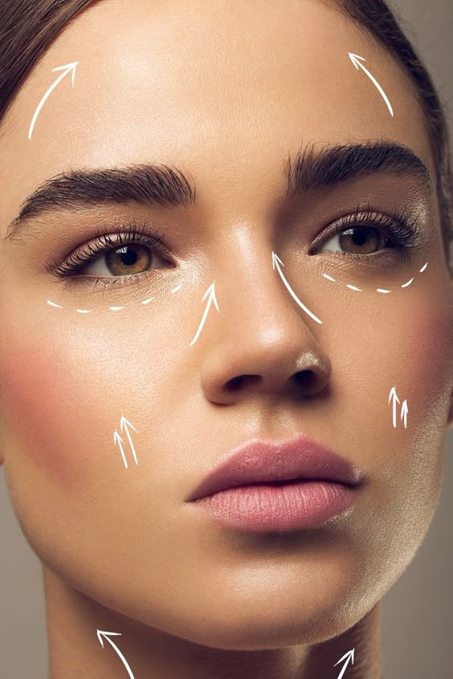

Procedimentos

Preenchimento Labial
O preenchimento labial é um procedimento estético minimamente invasivo realizado com ácido hialurônico para realçar o contorno, aumentar o volume e proporcionar mais simetria e hidratação aos lábios. Com técnica precisa e personalizada, o objetivo é alcançar resultados naturais, harmônicos e de acordo com as características individuais de cada paciente — valorizando a beleza sem exageros. Além de dar mais definição, o procedimento também pode suavizar linhas ao redor da boca, melhorar a projeção dos lábios e restaurar o volume perdido com o tempo.

Protocolo Renasce
O Protocolo Renasce foi desenvolvido para quem deseja restaurar o viço, a textura e a vitalidade natural da pele, unindo o que há de mais eficaz na estética facial: microagulhamento com ativos regeneradores e peeling. Mais do que um tratamento, é um processo de renovação profunda. O microagulhamento estimula a produção de colágeno e aumenta a permeabilidade da pele, potencializando a absorção de ativos selecionados conforme a necessidade de cada paciente — clareadores, hidratantes, firmadores ou antioxidantes.

Toxina Botulínica
A toxina botulínica é um procedimento estético não cirúrgico indicado para suavizar rugas e linhas de expressão, proporcionando um aspecto mais jovial, descansado e natural ao rosto. Por meio da aplicação em pontos estratégicos, o Botox atua relaxando a musculatura responsável pelas marcas dinâmicas — aquelas que aparecem com movimentos como sorrir, levantar a sobrancelha ou franzir a testa. O tratamento também pode ser utilizado de forma preventiva, ajudando a retardar o surgimento de linhas profundas ao longo do tempo.

Preenchimento Facial
O preenchimento facial é um dos procedimentos mais versáteis da estética moderna, indicado para harmonizar, revitalizar e devolver o volume natural do rosto de forma sutil e personalizada. Realizado com ácido hialurônico, uma substância biocompatível presente naturalmente no corpo, o tratamento permite repor estruturas de sustentação, suavizar sulcos e realçar pontos de beleza como maçãs do rosto, mandíbula, queixo e lábios — sempre respeitando a anatomia e a naturalidade de cada paciente. Mais do que preencher, o objetivo é restaurar proporções, equilíbrio e leveza, valorizando o que já é bonito em você.